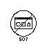
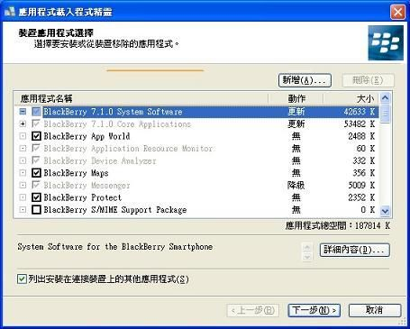

Steward
分享是一種喜悅、更是一種幸福
手機 - Blackberry Curve9320 - 安裝系統
刷機步驟：
1. 下載https://swdownloads.blackberry.com/Downloads/entry.do?code=A8BAA56554F96369AB93E4F3BB068C22並安裝(如果電腦已經安裝則不用下載安裝)
2. 下載https://swdownloads.blackberry.com/Downloads/browseSoftware.do並安裝(目前該版本只有MultiLanguage)
3. 下載http://bbsak.org/request.php?f=BBSAKv1.9.2_Installer.msi並安裝
4. 接著刪除C:\Program Files\Common Files\Research In Motion\AppLoader\Vendor.xml檔案
5. 將Blackberry Curve 9320透過USB連接到電腦並開啟BBSAK程式(如果跳出要輸入密碼，直接按確定就可以了)
6. 按BBSAK程式的Wipe Device按鈕
7. Curve 9320會重開機並且顯示Error 507

8. 開啟C:\Program Files\Common Files\Research In Motion\AppLoader\Loader.exe並按下一步，直到出現

9. 接著依照自己的喜愛選擇安裝，司徒一般會安裝
Blackberry App World
Blackberry Maps
East Asian Characters and Font Support->Traditional Chinese Characters and Font Support
East Asian Characters and Font Support->Simplified Chinese Characters and Font Support
East Asian Language and Input Support->Chinese Traditional Input Method
Email Setup
Google Talk
Windows Live Messenger
選好後就選擇下一步並選擇完成，接著就開始刷機了，刷完機之後，需要幾次的電池拔電動作才可以讓Curve 9320達到很穩定以及省電的狀態